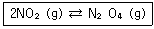
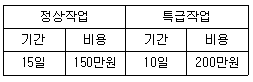

위험물기능장 (2008-07-13 기출문제)
1과목: 임의구분
1. 산화프로필렌의 성질에 대한 설명으로 옳은 것은?
- 산 및 알칼리와 중합반응을 한다.
- 물 속에서 분해하여 에탄을 발생한다.
- 연소범위가 14~57% 이다.
- 물에 녹기 힘들며 흡열반응을 한다.
(정답률: 76%)

2. 인화칼슘에 대한 설명 중 틀린 것은?
- 적갈색의 고체이다.
- 산과 반응하여 인화수소를 발생한다.
- pH가 7인 중성 물 속에 보관하여야 한다.
- 화재 발생시 마른모래가 적응성이 있다.
(정답률: 83%)
3. 염소산칼륨의 성질에 대한 설명으로 옳은 것은?
- 회색의 비결정성 물질이다.
- 약 400℃에서 열분해한다.
- 가연성이고 강력한 환원제이다.
- 비중은 약 1.2 이다.
(정답률: 72%)
4. 과산화나트륨의 저장법으로 가장 옳은 것은?
- 용기는 밀전 및 밀봉하여야 한다.
- 안정제로 황분 또는 알루미늄분을 넣어 준다.
- 수증기를 혼입해서 공기와 직접 접촉을 방지한다.
- 저장시설 내에 스프링클러설비를 설치한다.
(정답률: 90%)
5. 스티렌 60000L는 몇 소요단위인가?
- 1
- 1.5
- 3
- 6
(정답률: 81%)
6. 이산화탄소소화설비의 기준에 대한 설명으로 옳은 것은? (단, 전역방출방식의 이산화탄소소화설비이다.)
- 저장용기는 온도가 40℃ 이하이고 온도변화가 적은 장소에 설치할 것
- 저압식 저장용기의 충전비는 1.5 이상 1.9 이하로 할 것
- 저압식 저장용기에는 압력경보장치를 설치하지 말 것
- 기동용 가스 용기는 20MPa 이상의 압력에 견딜 수 있을 것
(정답률: 74%)
7. 제4류 위험물을 취급하는 제조소가 있는 동일한 사업소에서 저장 또는 취급하는 위험물이 지정수량의 몇 배 이상일 때 당해 사업소에 자체소방대를 설치하여야 하는가?
- 1000배
- 3000배
- 5000배
- 10000배
(정답률: 89%)
8. 다음 중 탄화칼슘의 저장방법으로 가장 적합한 것은?
- 석유 속에 저장한다.
- 에탄올 속에 저장한다.
- 질소가스로 봉입한다.
- 수증기로 봉입한다.
(정답률: 79%)
9. 위험물을 수납한 운반용기 외부에 표시할 사항에 대한 설명으로 틀린 것은?
- 위험물의 수용성 표시는 제4류 위험물로서 수용성인 것에 한하여 표시한다.
- 용적 200mL 인 운반용기로 제4류 위험물에 해당하는 에어졸을 운반할 경우 그 용기의 외부에는 품명ㆍ위험등급ㆍ화학명ㆍ수용성을 표시하지 아니할 수 있다.
- 기계에 의하여 하역하는 구조로 된 운반용기가 아닐 경우 용기 외부에는 운반용기 제조자의 명칭을 표시하여야 한다.
- 제5류 위험물에 있어서는 “화기엄금” 및 “충격주의”를 표시하여야 한다.
(정답률: 70%)
10. 다음 중 제3류 위험물의 금수성물질에 대하여 적응성이 있는 소화기는?
- 이산화탄소소화기
- 할로겐화합물소화기
- 탄산수소염류소화기
- 인산염류소화기
(정답률: 82%)
11. 톨루엔의 성질을 벤젠과 비교한 것 중 틀린 것은?
- 독성은 벤젠보다 크다.
- 인화점은 벤젠보다 높다.
- 비점은 벤젠보다 높다.
- 융점은 벤젠보다 낮다.
(정답률: 75%)
12. 다음 중 안전거리의 규제를 받지 않는 곳은?
- 옥외탱크저장소
- 옥내저장소
- 지하탱크저장소
- 옥외저장소
(정답률: 71%)
13. 전역방출방식의 분말소화설비에서 분말소화약제의 저장용기에 저장하는 제3종 분말소화약제의 양은 방호구역의 체적 1m3 당 몇 kg 이상으로 하여야 하는가? (단, 방호구역의 개구부에 자동폐쇄장치를 설치한 경우이고, 방호구역내에서 취급하는 위험물은 에탄올이다.)
- 0.360
- 0.432
- 2.7
- 5.2
(정답률: 59%)
14. 옥외저장탱크의 펌프설비 설치기준으로 틀린 것은?
- 펌프실의 지붕을 폭발력이 위로 방출될 정도의 가벼운 불연재료로 할 것
- 펌프실의 창 및 출입구에는 갑종방화문 또는 을종방화문을 설치할 것
- 펌프실의 바닥의 주위에는 높이 0.2m 이상의 턱을 만들 것
- 펌프설비의 주위에는 너비 1m 이상의 공지를 보유할 것
(정답률: 59%)
15. 25℃에서 다음과 같은 반응이 일어날 때 평형상태에서 NO2의 부분압력은 0.15atm이다. 혼합물 중 N2O4의 부분압력은 약 몇 atm 인가? (단, 압력평형상수 KP는 7.13이다.)

- 0.08
- 0.16
- 0.32
- 0.64
(정답률: 56%)
16. 화학반응에서 반응 전과 반응 후의 상태가 결정되면 반응경로와 관계없이 반응열의 총량은 일정하다는 법칙은?
- 헤스의 법칙
- 보일-샤를의 법칙
- 헨리의 법칙
- 르샤틀레에의 법칙
(정답률: 69%)
17. 다음 중 이온화경향이 가장 큰 것은?
- Ca
- Mg
- Ni
- Cu
(정답률: 67%)
18. 다음 중 페닐히드라진을 나타내는 것은?
- C6H5N=NC6H4OH
- C6H5NHNH2
- C6H5NHHNC6H5
- C6H5N=NC6H5
(정답률: 67%)
19. 옥내탱크저장소 중 탱크전용실을 단층건물 외의 건축물에 설치하는 경우 옥내저장탱크를 설치한 탱크전용실을 건축물의 1층 또는 지하층에 설치하여야 하는 위험물의 종류가 아닌 것은?
- 황화린
- 황린
- 동식물유류
- 질산
(정답률: 70%)
20. 0℃, 1기압에서 어떤 기체의 밀도가 1.617g/L 이다. 1기압에서 이 기체 1L가 1g이 되는 온도는 약 몇 ℃인가?
- 44
- 68
- 168
- 441
(정답률: 67%)
2과목: 임의구분
21. 다음 위험물 중 해당하는 품명이 나머지 셋과 다른 하나는?
- 큐멘
- 아닐린
- 니트로벤젠
- 염화벤조일
(정답률: 80%)
22. 다음 중 위험물 판매취급소의 배합실에서 배합하여서는 안 되는 위험물은?
- 도료류
- 염소산칼륨
- 과산화수소
- 유황
(정답률: 82%)
23. 1패러데이(F)의 전기량으로 석출되는 물질의 무게를 틀리게 연결한 것은?
- 수소 - 약 1g
- 산소 - 약 8g
- 은 - 약 16g
- 구리 - 약 32g
(정답률: 77%)
24. 비중이 1.84이고, 무게농도가 96wt% 인 진한 황산의 노르말 농도는 약 몇 N 인가? (단, 황의 원자량은 32이다.)
- 1.8
- 3.6
- 18
- 36
(정답률: 45%)
25. 황화린 중에서 비중이 약 2.03, 융점이 약 173℃ 이며 황색 결정이고 물, 황산 등에는 불용성이며 질산에 녹는 것은?
- P2S5
- P2S3
- P4S3
- P4S7
(정답률: 80%)
26. 다음 중 비점이 111℃인 액체로서, 산화하면 벤즈알데히드를 거쳐 벤조산이 되는 위험물은?
- 벤젠
- 톨루엔
- 크실렌
- 아세톤
(정답률: 77%)
27. 이황화탄소를 저장하는 실의 온도가 -20℃ 이고, 저장실내 이황화탄소의 공기 중 증기농도가 2vol%라고 가정할 때 다음 설명 중 옳은 것은?
- 점화원이 있으면 연소된다.
- 점화원이 있더라도 연소되지 않는다.
- 점화원이 없어도 발화된다.
- 어떠한 방법으로도 연소되지 않는다.
(정답률: 88%)
28. 공기를 차단한 상태에서 황린을 약 260℃로 가열하면 생성되는 물질은 제 몇 류 위험물인가?
- 제1류 위험물
- 제2류 위험물
- 제5류 위험물
- 제6류 위험물
(정답률: 91%)
29. 은백색의 광택이 있는 금속으로 비중은 약 7.86, 융점은 1530℃ 이고 열이나 전기의 양도체이며 염산에 반응하여 수소를 발생하는 것은?
- 알루미늄
- 철
- 아연
- 마그네슘
(정답률: 75%)
30. 윤활제, 화장품, 폭약의 원료로 사용되며, 무색이고 단맛이 있는 제4류 위험물로 지정수량이 4000L인 것은?
- C6H3(OH)(NO2)2
- C3H5(OH)3
- C6H5NO2
- C6H5NH2
(정답률: 65%)
31. 제1류 위험물인 염소산나트륨의 위험성에 대한 설명으로 틀린 것은?
- 산과 반응하여 유독한 이산화염소를 발생시킨다.
- 가연물과 혼합되어 있으면 충격ㆍ마찰에 의해 폭발할 수 있다.
- 조해성이 강하고 철을 부식시키므로 철제용기에는 저장하지 말아야 한다.
- 물과의 접촉 시 폭발할 수 있으므로 CO2 등의 질식소화가 효과적이다.
(정답률: 84%)
32. 개방형 스프링클러헤드를 이용한 스프링클러설비의 방사구역은 최소 몇 m2 이상으로 하여야 하는가? (단, 방호대상물의 바닥면적이 200m2 인 경우이다.)
- 100
- 150
- 200
- 250
(정답률: 73%)
33. 프로판-공기의 혼합기체를 완전 연소시키기 위한 프로판의 이론혼합비는 약 몇 vol% 인가? (단, 공기 중 산소는 21vol% 이다.)
- 9.48
- 5.65
- 4.03
- 3.12
(정답률: 59%)
34. 다음 중 단독으로 폭발할 위험이 있으며, ANFO 폭약의 주 원료로 사용되는 위험물은?
- KIO3
- NaBrO3
- NH4NO3
- (NH4)2Cr2O7
(정답률: 84%)
35. 불소계 계면활성제를 주성분으로 한 것으로 분말소화약제와 함께 트윈약제시스템(Twin Agent System)에 사용되어 소화효과를 높이는 포소화약제는?
- 수성막포소화약제
- 단백포소화약제
- 합성계면활성제포소화약제
- 내알코올형포소화약제
(정답률: 83%)
36. 부탄 100g 을 완전 연소시키는데 필요한 이론산소량은 약 몇 g 인가?
- 358
- 717
- 1707
- 3415
(정답률: 57%)
37. 80g의 질산암모늄이 완전히 폭발하면 약 몇 L의 기체를 생성하는가? (단, 1기압, 300℃를 기준으로 한다.)
- 164.6
- 112.2
- 78.4
- 67.2
(정답률: 35%)
38. 다음 중 분자의 입체 모양이 정사면체를 이루는 것은?
- H2O
- CH4
- SF4
- NH3
(정답률: 80%)
39. 1기압, 26℃에서 어떤 기체 10L의 질량이 40g 이었다. 이 기체의 분자량은 약 얼마인가?
- 25
- 49
- 98
- 196
(정답률: 72%)
40. 다음 중 비중이 가장 큰 물질은 어느 것인가?
- 이황화탄소
- 메틸에틸케톤
- 톨루엔
- 벤젠
(정답률: 57%)
3과목: 임의구분
41. 흡습성이 있는 등적색의 결정으로 물에는 녹으나 알코올에는 녹지 않으며, 비중은 약 2.69 이고 분해온도는 약 500℃인 성질을 갖는 위험물은?
- KClO3
- K2Cr2O7
- NH4NO3
- (NH4)2Cr2O7
(정답률: 64%)
42. 다음 중 하나의 옥내저장소에 제5류 위험물과 함께 저장할 수 있는 위험물은? (단, 위험물을 유별로 정리하여 저장하는 한편, 서로 1m 이상의 간격을 두는 경우이다.)
- 알칼리금속의 과산화물 또는 이를 함유한 것 이외의 제1류 위험물
- 제2류 위험물 중 인화성고체
- 제3류 위험물 중 알킬알루미늄 이외의 것
- 유기과산화물 또는 이를 함유한 것 이외의 제4류 위험물
(정답률: 70%)
43. 제6류 위험물의 위험등급에 관한 설명으로 옳은 것은?
- 제6류 위험물 중 질산은 위험등급Ⅰ이며, 그 외의 것은 위험등급Ⅱ이다.
- 제6류 위험물 중 과염소산은 위험등급Ⅰ이며, 그 외의 것은 위험등급Ⅱ이다.
- 제6류 위험물은 모두 위험등급Ⅰ이다.
- 제6류 위험물은 모두 위험등급Ⅱ이다.
(정답률: 89%)
44. 옥내저장소에 위험물을 수납한 용기를 겹쳐 쌓는 경우 높이의 상한에 관한 설명 중 틀린 것은?
- 기계에 의하여 하역하는 구조로 된 용기만 겹쳐 쌓는 경우는 6미터
- 제3석유류를 수납한 소형 용기만 겹쳐 쌓는 경우는 4미터
- 제2석유류를 수납한 소형 용기만 겹쳐 쌓는 경우는 4미터
- 제1석유류를 수납한 소형 용기만 겹쳐 쌓는 경우는 3미터
(정답률: 84%)
45. 위험물제조소에 설치되어 있는 포소화설비를 점검할 경우 포소화설비 일반점검표에서 약제저장탱크의 탱크 점검내용에 해당하지 않는 것은?
- 변형ㆍ손상의 유무
- 조작관리상 지장 유무
- 통기관의 막힘의 유무
- 고정상태의 적부
(정답률: 71%)
46. 원형관속에서 유속 3m/s 로 1일 동안 20000m3의 물을 흐르게 하는데 필요한 관의 내경은 약 몇 mm 인가?
- 414
- 313
- 212
- 194
(정답률: 78%)
47. 금속분에 대한 설명 중 틀린 것은?
- Al은 할로겐원소와 반응하면 발화의 위험이 있다.
- Al은 수산화나트륨 수용액과 반응시 NaAl(OH)2와 H2가 생성된다.
- Zn은 KCN 수용액에서 녹는다.
- Zn은 염산과 반응시 ZnCl2와 H2가 생성된다.
(정답률: 71%)
48. 다음 위험물의 지정수량이 옳게 연결된 것은?
- Ba(ClO4)2 - 50kg
- NaBrO3 - 100kg
- Sr(NO3)2 - 200kg
- KMnO4 - 500kg
(정답률: 77%)
49. 적린에 대한 설명 중 틀린 것은?
- 연소하면 유독성인 흰색 연기가 나온다.
- 염소산칼륨과 혼합하면 쉽게 발화하여 P2O5와 KOH가 생성된다.
- 적린 1몰의 완전 연소시 1.25몰의 산소가 필요하다.
- 비중은 약 2.2, 승화온도는 약 400℃이다.
(정답률: 71%)
50. 다음의 위험물을 옥내저장소에 저장하는 경우 옥내저장소의 구조가 벽ㆍ기둥 및 바닥이 내화구조로 된 건축물이라면 위험물안전관리법에서 규정하는 보유공지를 확보하지 않아도 되는 것은?
- 아세트산 30000L
- 아세톤 5000L
- 클로로벤젠 10000L
- 글리세린 15000L
(정답률: 81%)
51. 다음 중 위험물안전관리법상의 위험등급Ⅰ에 속하면서 동시에 제5류 위험물인 것은?
- CH3ONO2
- C6H2CH3(NO2)3
- C6H4(NO)2
- N2H4ㆍHCl
(정답률: 70%)
52. 트리에틸알루미늄 19kg이 물과 반응하였을 때 생성되는 가연성가스는 표준상태에서 몇 m3 인가? (단, 알루미늄의 원자량은 27이다.)
- 11.2
- 22.4
- 33.6
- 44.8
(정답률: 50%)
53. 제5류 위험물 중 품명이 니트로화합물이 아닌 것은?
- 니트로글리세린
- 피크르산
- 트리니트로벤젠
- 트리니트로톨루엔
(정답률: 73%)
54. 이산화탄소의 특성에 대한 설명으로 옳은 것은?
- 증기의 비중은 약 0.9 이다.
- 임계온도는 약 -20℃ 이다.
- 0℃, 1기압에서의 기체 밀도는 약 0.92g/L 이다.
- 삼중점에 해당하는 온도는 약 -56℃ 이다.
(정답률: 65%)
55. 공정에서 만성적으로 존재하는 것은 아니고 산발적으로 발생하며, 품질의 변동에 크게 영향을 끼치는 요주의 원인으로 우발적 원인인 것을 무엇이라 하는가?
- 우연원인
- 이상원인
- 불가피원인
- 억제할 수 없는 원인
(정답률: 76%)
56. 계수 규준형 1회 샘플링(KS A 3102)에 관한 설명 중 가장 거리가 먼 내용은?
- 검사에 제출된 로트의 제조공정에 관한 사전 정보가 없어도 샘플링 검사를 적용할 수 있다.
- 생산자측과 구매자측이 요구하는 품질보호를 동시에 만족시키도록 샘플링 검사방식을 선정한다.
- 파괴검사의 경우와 같이 전수검사가 불가능한 때에는 사용할 수 없다.
- 1회만의 거래 시에도 사용할 수 있다.
(정답률: 76%)
57. 어떤 공장에서 작업을 하는데 있어서 소요되는 기간과 비용이 다음 [표]와 같을 때 비용구배는 얼마인가? (단, 활동시간의 단위는 일(日)로 계산한다.)

- 50,000원
- 100,000원
- 200,000원
- 300,000원
(정답률: 86%)
58. 방법시간측정법(MTM : Method Time Measurement)에서 사용되는 1 TMU(Time Measurement Unit)는 몇 시간인가?
- 1/100000 시간
- 1/10000 시간
- 6/10000 시간
- 36/1000 시간
(정답률: 85%)
59. 품질특성을 나타내는 데이터 중 계수치 데이터에 속하는 것은?
- 무게
- 길이
- 인장강도
- 부적합품의 수
(정답률: 92%)
60. 다음 중 품질관리시스템에 있어서 4M에 해당하지 않는 것은?
- Man
- Machine
- Material
- Money
(정답률: 91%)